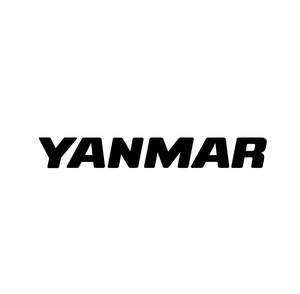

Trade Mark Journal No.2025/011 14 March 2025
UK00004168781 4 March 2025 (4,7,9,11,12,35,37)

- Class 4
- Lubricants; lubricating oil [not for fuel].
- Class 7
- Earth moving machines, civil engineering machines, excavators, backhoes, loader for earth moving or civil engineering, carriers traveling on crawlers; construction machine and apparatus, namely, excavators, backhoes, power shovels, bulldozers, wheel loaders, and parts and fittings for the aforesaid machines; industrial fishing machines; agricultural machines and agricultural implements, other than hand-operated; agricultural machine, namely, tilling, sowing, planting seedlings, fertilizer spraying, herbicides spraying, insect repellent spraying, harvesting, threshing, grain drying, rice hulling, or rice polishing machine and parts and fittings for the aforesaid machines; lawnmowers and their parts and fittings; non-electric prime movers or internal combustion engines not for land vehicles; industrial engines, boat engines, ship engines and parts and fittings for the aforesaid prime movers or engines; power transmission equipment other than land vehicles; AC motors and DC motors [not including those for land vehicles but including parts for any AC motors and DC motors]; generator, powered by engines; generator with waste heat utilization system, powered by engine; power source unit for driving machines, other than land vehicles; portable generators, powered by engines; portable lighting apparatus, powered by engines; submersible automatic cleaner for fish farming nets.
- Class 9
- Battery packs; batteries; rechargeable batteries; electrical cells and batteries; batteries for vehicles; lithium batteries; lithium ion batteries; lithium secondary batteries; lithium phosphate batteries; lithium iron phosphate batteries; electric batteries for powering electric vehicles; battery chargers; battery boxes; power units [batteries]; apparatus, instruments or computer software for the management of power supply, of power transferring, of power distributing for driving such machines or equipment as ships, boats, earth moving or civil engineering machines and equipment, and agricultural machines and equipment; apparatus, instruments or computer software for the management of charging or discharging batteries for driving such machines or equipment as ships, boats, earth moving or civil engineering machines and equipment, and agricultural machines and equipment.
- Class 11
- Heat exchangers, other than parts of machines; Cooling installations and machines; Apparatus for heating or cooling and their parts and fittings; Air cooling apparatus.
- Class 12
- Non-electric prime movers for land vehicles, not including their parts; power transmission equipment for land vehicles; motors and engines for land vehicles, internal combustion engines and parts and fittings for the aforesaid prime movers or engines; vessels and their parts and fittings; steering system for ships or boats; drones for agricultural use; tractors for agricultural use and parts and fittings for the tractor.
- Class 35
- Retail services or wholesale services for agricultural machines, implements and supplies; Retail and wholesale services relating to freezing machines and apparatus; Retail services or wholesale services for vessels and their parts and fittings.
- Class 37
- Repair or maintenance of ships, boats and engines; provision of information on the location and operating status for repair or maintenance of ships, boats and engines; repair or maintenance of earth moving or civil engineering machines and equipment; provision of information on the location and operating status for maintenance and repair of earth moving or civil engineering machines and equipment; inspection or maintenance of batteries driving ships, boats, earth moving or civil engineering machines and equipment, agricultural machines and equipment; repair or maintenance of agricultural machines and equipment, and provision of information on the location and operating status for repair or maintenance of agricultural machines and equipment; repair or maintenance for motors or engines; repair or maintenance for lawn mower; repair or maintenance for generator powered by engine or generator with waste heat utilization systems powered by engine; repair or maintenance for portable generator powered by engine, portable lighting apparatus powered by engine; repair or maintenance for power supply unit, apparatus or instruments for driving such machines or equipment as ships, boats, earth moving or civil engineering machines and equipment, and agricultural machines and equipment; repair or maintenance for power distributing unit, apparatus or instruments for driving such machines or equipment as ships, boats, earth moving or civil engineering machines and equipment, and agricultural machines and equipment; repair or maintenance for power charging or discharging unit, apparatus or instruments for batteries driving such machines or equipment as ships, boats, earth moving or civil engineering machines and equipment, and agricultural machines and equipment; repair or maintenance for submersible automatic cleaners for fish farming nets; installation, repair or maintenance of heat exchangers, apparatus for heating or cooling, cooling installations and machines, air cooling apparatus, air-conditioners, generators powered by engine, motors or engines for ships or boats; support or revise for computer software for the management of power supply for driving such machines or equipment as ships, boats, earth moving or civil engineering machines and equipment, and agricultural machines and equipment; support or revise for computer software for the management of power distributing for driving such machines or equipment as ships, boats, earth moving or civil engineering machines and equipment, and agricultural machines and equipment; support or revise for computer software for the management of charging or discharging batteries for driving such machines or equipment as ships, boats, earth moving or civil engineering machines and equipment and agricultural machines, and equipment; rental or lease of earth moving or civil engineering machines and equipment.
Yanmar Holdings Co., Ltd.
Representative: HGF Limited